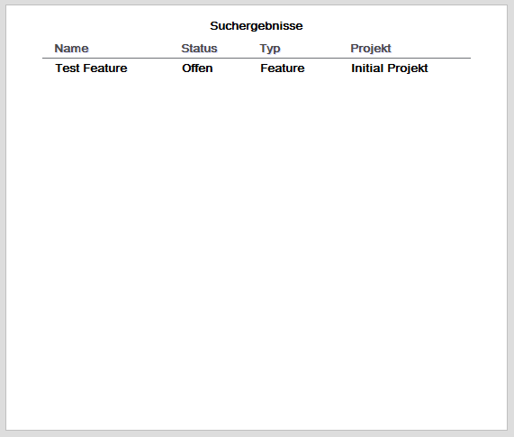

Darstellung der Suchergebnisse
Nach Ausführen der Freitextsuche "Scruumle" oder der Detailsuche werden die Suchergebnisse auf der Oberfläche "Suchergebnisse" dargestellt.

Die Suchergebnisse werden in tabellarischer Form aufgeführt, wobei der Status, der Typ und das Projekt des Tickets aufgeführt werden.
Created with the Personal Edition of HelpNDoc: Easily create HTML Help documents